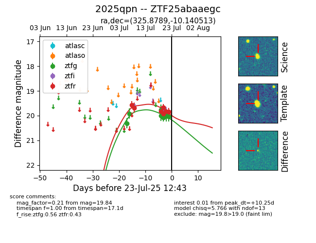

Target ZTF25abaaegc at 2025-07-23 12:43, see:
FINK: fink-portal.org/ZTF25abaaegc
Lasair: lasair-ztf.lsst.ac.uk/objects/ZTF25abaaegc
ALeRCE: alerce.online/object/ZTF25abaaegc
TNS: wis-tns.org/object/2025qpn
YSE: ziggy.ucolick.org/yse/transient_detail/2025qpn
alt names
ZTF25abaaegc (ztf,fink)
2025qpn (tns,yse)
coordinates:
equatorial (ra, dec) = (325.8789,-10.14051)
galactic (l, b) = (44.6698,-42.68661)
photometry
last ztfg=20.05, ztfr=19.84
10 ztfg, 8 ztfr detections
